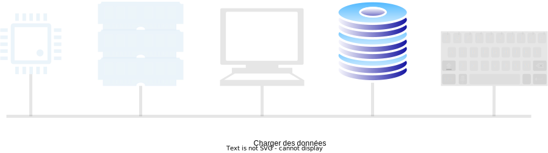
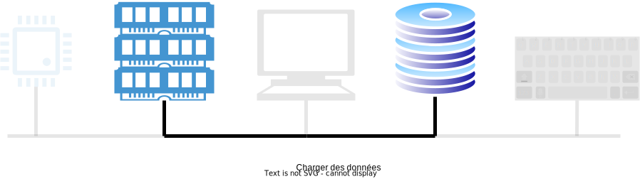
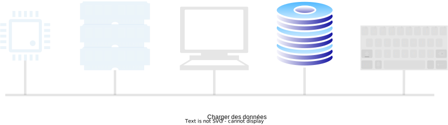
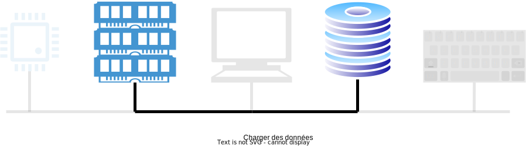

Bachelor in Artificial Intelligence, Data and Management Sciences
CentraleSupelec and ESSEC Business School - 2023/2024
CentraleSupelec and ESSEC Business School - 2023/2024

How does the computer work?


 



It's all just electrical wires...
... that we turn ON and OFF.
... that we turn ON and OFF.
Formerly: ENIAC

- First fully electronic computer.
- Programming was done directly in machine language.
- Only one program can run at a time.
- The lack of an operating system forced the programmer to manually load the program.
Formerly: IBM RAMAC 305

- The First hard disk computer (the IBM 350) was marketed in September 1956 by IBM.
-
It consists of the following elements:
processing unit, printer, console, power supply, hard drive, and 5MB memory. - The processing unit is based on a magnetic drum where the program is stored.
- An operator programs using punched cards and writes the data onto the drum.
Automate tasks
- How to automate the tasks of operators
and programmers? - Write a computer program that:
- decides who does what and when.
- bridges software applications and hardware
Definition
“An operating system is a set of programs providing the interface between hardware and users.”
- manages the hardware part.
- serves as a base for software applications

History/Types of OS

History/Types of OS

History/Types of OS

History/Types of OS
History/Types of OS

History/Types of OS

History/Types of OS

Operating system roles
- The kernel-hardware interface supports the management and sharing of machine resources.
- The kernel-user interface provides an easier-to-use and more user-friendly virtual machine.
- The kernel provides several significant functionalities.

The kernel-hardware interface
- Manage access and sharing of hardware resources.
- processor
- memory
- peripheral devices
- ...
- This management must ensure:
- equity of access to hardware
- protecting access to hardware
- consistency of hardware states

The kernel-user interface
- Provide an interface between hardware and software applications.
- a simplified and unified interface.
- Present above the physical machine, a more straightforward and more user-friendly virtual machine.
- Create the illusion of real physical resources (processor, memory, peripheral...).

Command Interpreter (shell)
-
Command language:
the user interface with the operating system. -
Command Interpreter:
Execute user commands by calling the proper system routine.
Command Interpreter (shell)
- Each operating system has its own command language:
- MSDOS/Unix : console + keyboard
- Mac/Windows : mouse + keyboard
- iOS/Android : buttons + touch screen

The Kernel of an operating system
-
Process management
- scheduling, synchronization, ...
-
Memory management
- allocation, space management, ...
-
Secondary storage management
- file system, ...
-
Input/output management (I/O)
- controllers, drivers, ...
- Security management
General Structure of an OS
- System Calls: functions allowing user applications to request kernel services.
- Kernel: a set of programs providing general services.
- Drivers: programs allowing the kernel to interact with external devices.
- Interruptions : events produced by the hardware and triggering kernel services.
- Exceptions : events produced by the processor and triggering kernel services.

Loading an OS
- The OS is the first program executed when the computer is turned ON after booting (boot).
- The boot (bootstrap) defines the successive stages of startup.
The boot steps
- the POST test - Power On Self Test
- after a start or a reset operation, the processor loads the first instructions located at the address FFFF0 from the BIOS ROM memory.
- instructions for triggering a BIOS program that initializes and tests hardware functions.
- loading the MBR - Master Boot Record
- if the POST test succeeds, it will consult RAM CMOS to identify the system disk whose first sector is called MBR.
- the MBR code tests the partition table to load the partition containing the boot sector with IPL - Initial Program
Load.
- the IPL loads the OS or bootmanager into RAM.
- the OS is launched